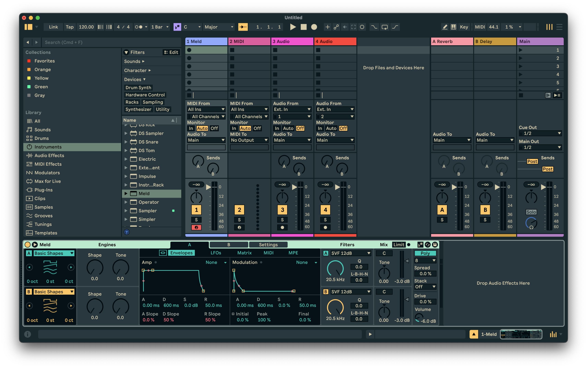

AI-Assisted Sound Design Workflow
Prototyping creator-first tools that suggest patches, timbres, or transformations based on musical intent— designed for fast iteration inside a DAW workflow.
Cognitive Science (AI & HCI) @ UCSC • Electronic Music Minor. I focus on AI in music: generative audio, intelligent interfaces for creators, and experiments connecting ML with how humans hear, feel, and make sound.
Looking for internships/research in AI + music tech, creative ML, and HCI.
.jpeg)
.jpeg)
A few directions I’m building toward: intelligent composition tools, MIR analysis, and creator-first interfaces.
Prototyping creator-first tools that suggest patches, timbres, or transformations based on musical intent— designed for fast iteration inside a DAW workflow.
Building representations for rhythm, harmony, and texture to compare songs or sections—aimed at retrieval, recommendation, and creative exploration.
Designing interfaces that match how people hear change—mapping controls to perceptual dimensions like brightness, roughness, and spatial width.
Exploring sequence models and conditioning signals for controllable musical output—focusing on human-meaningful controls rather than “black box” generation.
Tools that make music creation more expressive, accessible, and intelligent—where the interface and the model feel like a single instrument.
Models that respect artistic intent—fast control, editable outputs, and transparent iteration loops.
Representation learning for rhythm, harmony, and texture—useful for retrieval, analysis, and new interfaces.
Mapping controls to perception, not just parameters—so interfaces behave like instruments, not menus.